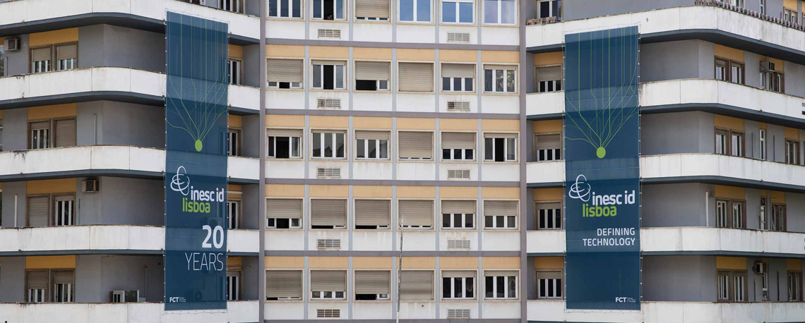

Lisbon Unit for Learning and Intelligent Systems
We are pleased to announce the creation of the Lisbon Unit for Learning and Intelligent Systems (LUMLIS), a unit of the
European Laboratory for Learning and Intelligent Systems (ELLIS), hosted at the Instituto Superior Técnico (IST) of the University of Lisbon (UL).
The HLTmeet Reading Group @ INESC-ID
This reading group meets regularly to discuss research topics on different sub-fields of Speech and Natural Language Processing.
Reading Group Schedule
| Winter Term 2022-2023 Wednesdays at 4:00 PM (room 336 or Zoom ) | ||
| Date | Presenter | Topic |
| Oct 12 | Carlos Carvalho | Robust Self-Supervised Audio-Visual Speech Recognition - [paper] |
| Oct 19 | Discussion about ICASSP and Interspeech papers | |
| Oct 26 | Gonçalo Raposo | Memorizing Transformers - [paper] |
| Nov 2 | Francisco Teixeira | Introducing Model Inversion Attacks on Automatic Speaker Recognition - [paper] |
| Nov 9 | Thomas Rolland | AudioLM: a Language Modeling Approach to Audio Generation - [paper] |
| Nov 23 | Higo Pires | Evaluation of Sentiment Analysis in Finance: From Lexicons to Transformers - [paper] |
| Nov 30 | Rubén Solera-Ureña | The Importance of Speech Stimuli for Pathologic Speech Classification - [paper] |
| Jan 4 | Catarina Botelho | ChatGPT - [blog post] |
| Jan 11 | John Mendonça | The Forward-Forward Algorithm: Some Preliminary Investigations - [paper] |
| Jan 18 | Mariana Julião | On the Utility of Self-supervised Models for Prosody-related Tasks - [paper] |
| Jan 25 | Alberto Abad | FLEURS: Few-shot Learning Evaluation of Universal Representations of Speech - [paper] |
| Feb 1 | Patrícia Pereira | Does GPT-3 Generate Empathetic Dialogues? A Novel In-Context Example Selection Method and Automatic Evaluation Metric for Empathetic Dialogue Generation - [paper] |
| Feb 8 | Isabel Trancoso | On the Predictive Power of Objective Intelligibility Metrics for the Subjective Performance of Deep Complex Convolutional Recurrent Speech Enhancement Networks - [paper] |
| Summer Term 2022-2023 Wednesdays at 4:00 PM (room 336 or Zoom ) | ||
| Date | Presenter | Topic |
| Feb 22 | Carlos Carvalho | Regeneration Learning: A Learning Paradigm for Data Generation - [paper] |
| Mar 1 | Gonçalo Raposo | GPTScore: Evaluate as You Desire - [paper] |
| Mar 15 | Fernando Batista | Expanding Pretrained Models to Thousands More Languages via Lexicon-based Adaptation - [paper] |
| Mar 22 | Thomas Rolland | Synt++: Utilizing Imperfect Synthetic Data to Improve Speech Recognition - [paper] Towards Data Selection on TTS Data for Children’s Speech Recognition - [paper] |
| Mar 29 | Francisco Teixeira | Encoder-Decoder Based Attractors for End-to-End Neural Diarization - [paper] |
| April 5 | Higo Pires | Benchmarking Zero-shot Text Classification: Datasets, Evaluation and Entailment Approach - [paper] |
| April 12 | Catarina Botelho | Machine Love - [paper] |
| April 19 | Rubén Solera-Ureña | Tips and tricks for researchers and reviewers |
| April 26 | John Mendonça | Sparks of Artificial General Intelligence: Early experiments with GPT-4 - [paper] |
| May 3 | Mariana Julião | Truth Is a Lie: Crowd Truth and the Seven Myths of Human Annotation - [paper] |
| May 10 | Patrícia Pereira | Is ChatGPT Equipped with Emotional Dialogue Capabilities? - [paper] |
| May 24 | Francisco Teixeira and Anna Havras |
ICASSP work and Master's thesis - [paper] |
| May 31 | Isabel Trancoso | Interpreting Deep Representations of Phonetic Features via Neuro-Based Concept Detector: Application to Speech Disorders Due to Head and Neck Cancer - [paper] |
| Jun 21 | Carlos Carvalho | Structured Pruning of Self-Supervised Pre-trained Models for Speech Recognition and Understanding - [paper] |
| Jun 28 | Rubén Solera-Ureña | Federated Learning for ASR based on Wav2vec 2.0 - [paper] |
| Jul 5 | Gonçalo Raposo | DialGuide: Aligning Dialogue Model Behavior with Developer Guidelines - [paper] |
| Jul 19 | Alberto Abad | Sumformer: A Linear-Complexity Alternative to Self-Attention for Speech Recognition - [paper] |
| Jul 26 | Thomas Rolland | Reducing Barriers to Self-Supervised Learning: HuBERT Pre-training with Academic Compute - [paper] |
| Sep 13 | Catarina Botelho Mariana Julião |
Careful Whisper - leveraging advances in automatic speech recognition for robust and interpretable aphasia subtype classification - [paper] The Androids Corpus: A New Publicly Available Benchmark for Speech Based Depression Detection - [paper] Towards robust paralinguistic assessment for real-world mobile health (mHealth) monitoring: an initial study of reverberation effects on speech - [paper] Which aspects of motor speech disorder are captured by Mel Frequency Cepstral Coefficients? Evidence from the change in STN-DBS conditions in Parkinson’s disease - [paper] Why We Should Report the Details in Subjective Evaluation of TTS More Rigorously - [paper] Speech Self-Supervised Representation Benchmarking: Are We Doing it Right? - [paper] |
| Sep 20 | Francisco Teixeira | Malafide: a novel adversarial convolutive noise attack against deepfake and spoofing detection systems - [paper] Vocoder drift in x-vector–based speaker anonymization - [paper] Mutual Information-based Embedding Decoupling for Generalizable Speaker Verification - [paper] pyannote.audio 2.1 speaker diarization pipeline: principle, benchmark, and recipe - [paper] |
| Sep 27 | Carlos Carvalho Francisco Teixeira |
AfriNames: Most ASR Models "Butcher" African Names - [paper] MT4SSL: Boosting Self-Supervised Speech Representation Learning by Integrating Multiple Targets - [paper] Reproducing Whisper-Style Training Using an Open-Source Toolkit and Publicly Available Data - [paper] |
| Oct 4 | John Mendonça Gonçalo Raposo |
The Timing Bottleneck: Why Timing and Overlap Are Mission-Critical for Conversational User Interfaces, Speech Recognition and Dialogue Systems - [paper] ChatGPT vs. Crowdsourcing vs. Experts: Annotating Open-Domain Conversations With Speech Functions - [paper] Leveraging Large Language Models for Automated Dialogue Analysis - [paper] The Open-Domain Paradox for Chatbots: Common Ground as the Basis for Human-Like Dialogue - [paper] Approximating Online Human Evaluation of Social Chatbots With Prompting - [paper] Memories for Virtual AI Characters - [paper] |
| Oct 18 | Carlos Carvalho | Transformers learn through gradual rank increase - [paper] |